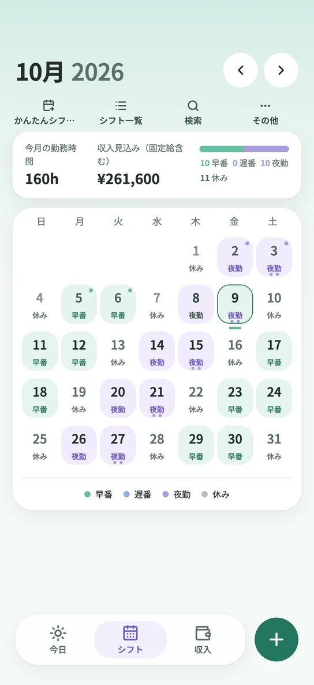

シフト、勤務時間、給与の目安をひとつに。
交代勤務やバイトのシフトをまとめ、実際の勤務時間と休憩を記録。給料日前に、設定した時給や残業ルールで給与の目安を確認できます。
App StoreでダウンロードiPhone・iPad向け。無料でダウンロードでき、Proは任意です。

交代勤務のシフトを管理
早番・遅番・夜勤に色や時刻を設定。繰り返しのシフトを組み、掛け持ちの予定を同じカレンダーで確認できます。
実際の勤務時間を記録
出退勤時刻、無給の休憩や手当を記録。引き継ぎのメモや写真、やることもシフトごとに残せます。
給料日前に給与の目安を確認
時給や残業ルールを設定して、給与期間ごとの見込みを確認。実際の入金額も記録できます。
シフト管理、勤務時間の記録、給与の概算はアカウントなしで使えます。Proでは通知、書き出し、バックアップを利用できます。
App Storeでダウンロード